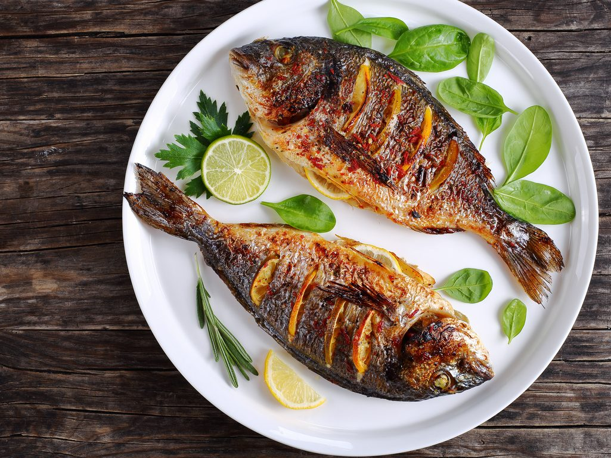

fish

grilled fish with lemon
ingredients
- 1 clove garlic, minced
- 6 tablespoons olive oil
- 1 teaspoon dried basil
- 1 teaspoon salt
- 1 teaspoon ground black paper
- 1 tablespoon fresh lemon juice
- 1 tablespoon chopped fresh parsley
- 2 (6 ounce) fillets halibut
steps
- In a stainless steel or glass bowl, combine garlic,
olive oil, basil, salt, pepper, lemon juice, and parsley.
- Place the halibut filets in a shallow glass dish or a
resealable plastic bag, and pour the marinade over the fish.
Cover or seal and place in the refrigerator for 1 hour, turning occasionally.
- Preheat an outdoor grill for high heat and lightly oil grate.
Set grate 4 inches from the heat.
- Remove halibut filets from marinade and drain off the excess.
Grill filets 5 minutes per side or until fish is done when easily flaked with a fork.